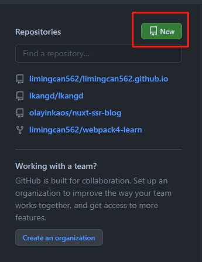
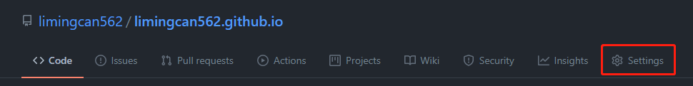
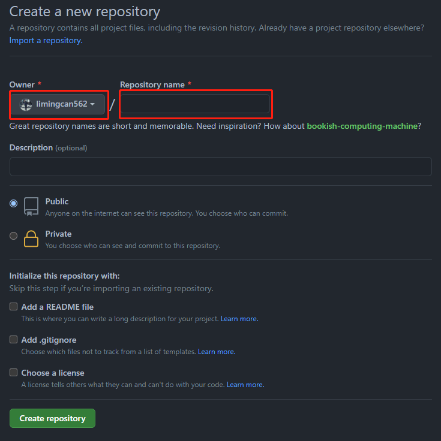
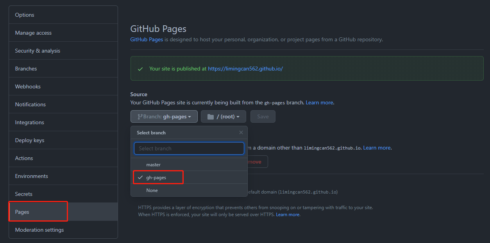
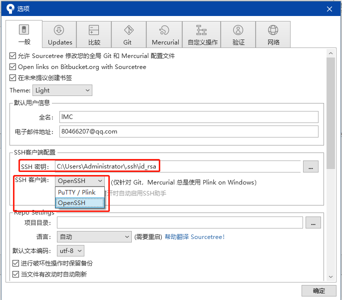

如何使用nuxtJs在github.io搭建自己博客
可以使用
nuxtJSDIY一个专属自己的博客，利用markdown来记录博客
概述
- 设置
github上的个人主页 - 在本地构建项目
- 部署踩坑
设置
github上的个人主页
-
新建一个项目
登录github以后，点击主页的New按钮新建一个代表个人主页的仓库  仓库名字自取，可以取姓名全拼+github.io，博主的个人主页仓库名叫就是：limingcan562.github.io -
完成以后回到主页你会发现仓库多了一个叫
limingcan562.github.io的仓库（请取你自己的名字），进入以后点击Settings -
设置未来
github.io主页的链接
进入到自己刚刚建好的仓库进行配置 注意：
Repository name请填写前面的Owner名字 +.github.io- 如图示，
Repository name就应该写limingcan562.github.io这样后面可以直接用limingcan562.github.io打开你的个人主页
-
修改个人主页映射对应的仓库分支 
注意：
- 我是将打包好的文件推送到仓库的
gh-pages分支，所以需要把个人主页映射到gh-pages分支，这样当你打开个人主页是，其实看到的是编译好的gh-pages分支内容 - 推送
gh-pages也是个坑，后续会讲
- 我是将打包好的文件推送到仓库的
-
OK，目前我们
github部分就完成了
在本地构建项目
这个就不过多的赘述了，因为我的博客是用nuxtJs做的，所以直接上官网看看文档，直接搞个demo项目下来，这里主要介绍下我用到的插件文档
nuxtJsfrontmatter-markdown-loader用来编译md的loadergithub-markdown-css美化编译后的mdprismjs用来高亮mdgh-pages用来发布打包文件到github的gh-pages分支
部署踩坑
- 用
soureceTree一直推不上github或者拉不下代码，等了好久以后报错问题！ - 使用
gh-pages推送分支部署时，老是报错！ - 代码推到
gh-pages分支后，为什么不能预览，资源404！
-
用
soureceTree一直推不上github或者拉不下代码，等了好久以后报错问题！
不知道用soureceTree的同学有没有遇到过，在拉github代码或者推代码到github时，发现等了很久，结果后面发现各种各样的报错，或者一直弹出要输入github账号密码，就十分的烦躁...但后面上网各种找答案以后，终于有办法可以解决：
不要用https的方式连接github仓库，一定要用ssh方式连接仓库
mac端跟着网上配置ssh到github的步骤走，问题不大，但是在生成ssh时，会提示要你输入密码，此时不要输入密码，一路回车就好了，这样后面推送代码的时候，就不会再提示输入密码。这里讲下window环境下怎么弄
在配置好ssh到github以后，我们会发现window的souceTree拉取代码还是有问题，这里需要设置一下：
进入工具 --> 选项

这样设置好以后，关掉sourceTree重新推一下就好了
-
使用
gh-pages推送分支部署时，老是报错！
有时我们可能使用gh-pages推送分支，或者把远程gh-pages删除在推送，或者做了什么乱七八糟的操作以后，发现经常报错，类似：
{"code":128,"message":"fatal: couldn't find remote ref refs/heads/gh-pages\n","name":"ProcessError"}
就会十分的崩溃，但是在查阅了很多资料以后发现还是有解决方案的：
- 在项目下的终端运行：
node node_modules/gh-pages/bin/gh-pages-clean；然后再推送，你会发现问题迎刃而解！可以参考这篇文章 - 将
deploy.js里面的repo改成ssh链接，就好了（这个是最重要的！）
-
代码推到
gh-pages分支后，为什么不能预览，资源404！
首先，我们使用gh-pages提交代码到gh-pages分支时，我们会看到，里面的文件都有，但是就是没有.nojekyll，没有.nojekyll 是最根本的原因，默认gh-pages是不会把点文件推上去的
因为如果github上没有这个文件，是会忽略掉其他_开头的文件的，因此即使github上有_nuxt文件，一样会找不到资源，因为它会被略了，具体可以参考这篇文章
所以我们需要在deploy.js文件里改一下配置：
ghpages.publish('./dist', {
branch: 'gh-pages',
repo: '你的仓库ssh地址',
dotfiles: true, // 很重要！！
message: 'deploy'
}, err => {});
重点是把dotfiles: true，这样.nojekyll才能推上去